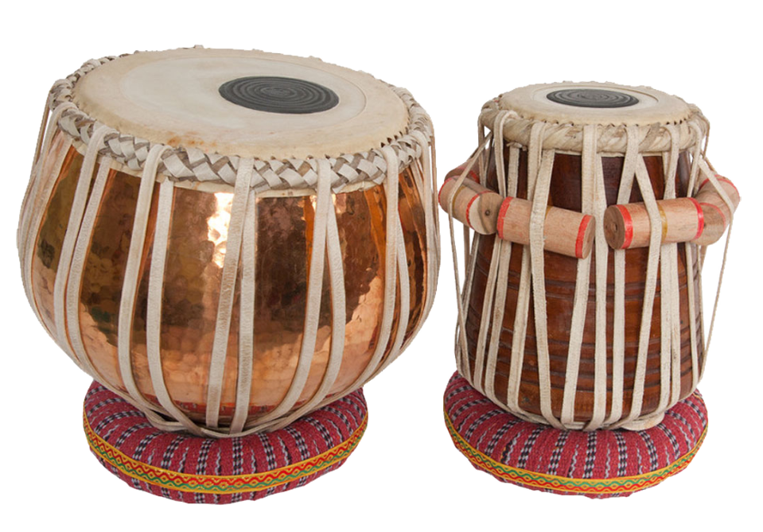

Here at Tabla Yeet Science, we strive to expose people to one specific aspect of Indian Classical Music: tabla music. Tabla music can evoke one's deepest feelings, as the way the greatest maestros can use their fingers to create stunning melodies and harmonies can baffle even the most experienced people. We hope you enjoy your time here and learn something new about one of the most intricate cultures in the world.
\ 